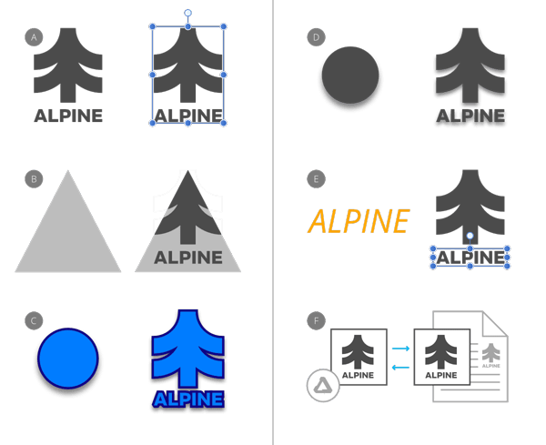

The Edit menu provides multiple ways to copy and paste objects. Pasted objects can include/exclude specific copied object properties.

You can copy content throughout the application or externally to third-party apps. Both need a reciprocal pasting operation to add the content to the target page.
The Copy items as SVG preference (accessed via Preferences>General) copies objects in SVG format in readiness for pasting to external apps.
As well as the commonly used Paste command, other paste commands can be used to selectively control which object's properties are included/excluded in the paste operation.
| Paste option | Description |
|---|---|
| Paste | Pastes objects, preserving the copied object's look and formatting. |
| Paste Inside | Pastes an object inside another object. |
| Paste Style | Pastes an object's stroke, fill and layer effect(s) to another object. |
| Paste FX | Pastes only layer effect(s) to another object. |
| Paste Without Format | Pastes unformatted text by stripping the formatting from the copied text. When pasted, the target text will retain its text formatting. |
| Paste Special | Pastes copied content into and out of your Affinity app using a choice of clipboard formats that show dynamically by the type of content copied externally or within Affinity. |
When using Paste Special you will be offered a choice of clipboard formats to use for pasting. These options are dependent on the type of content copied and will dynamically change accordingly.
For example, for copied curves and shapes your formats are:
For text, the available choices will be different, and may include:
1 These clipboard formats are available when Copy items as SVG is enabled via Preferences>General.
2 These are proprietary Affinity formats that retain the highest level of fidelity to the original copied object. This format is used by default when copying and pasting between Affinity apps.